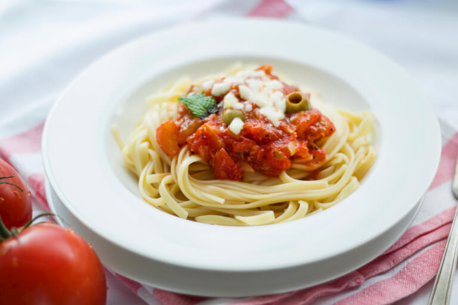

Pasta
=============
### Ingredients
* 2 red peppers , deseeded and sliced
* 2 yellow peppers , deseeded and sliced
* extra virgin olive oil
* sea salt
* freshly ground black pepper
* 2 red onions , peeled and finely sliced
* 2 cloves garlic , peeled and grated
* 2 handfuls fresh flat-leaf parsley , leaves finely chopped, stalks reserved
* 2 tablespoons red wine vinegar or balsamic vinegar
* 2 handfuls Parmesan cheese , grated
* 2 heaped tablespoons mascarpone cheese or crème fraîche , optional
* 455 g rigatoni, penne or spaghetti
### Instructions
1. Put all the peppers in a large frying pan over a medium heat with a little olive oil and a pinch of salt and pepper.
2. Place a lid on, and cook slowly for 15 minutes until softened. Don't rush this too much, as cooking the peppers slowly like this really helps to bring out the flavour.
3. Add the onion and cook for a further 20 minutes.
4. Then add the garlic and parsley stalks and toss around, keeping everything moving in the pan.
5. Cook for about 3 minutes most. Have a little taste, and season with a bit more salt and pepper.
5. Add the vinegar - it will sizzle away, so give everything a good toss.
6. Then add one handful of the grated Parmesan and the mascarpone or crème fraîche if you are using it and turn the heat down to minimum while you cook the pasta.
7. Meanwhile put a large pot of salted water on to boil.
8. Add the pasta to the boiling water and cook according to the packet instructions.
9. When cooked, drain in a colander, reserving some of the cooking water.
10. Put the peppers, pasta and parsley leaves into a large warmed bowl.
11. Give them a good toss together, then add a little of the pasta cooking water and a few good lugs of extra virgin olive oil to coat the pasta nicely.
12. Serve straight away sprinkled with the rest of the Parmesan.
**Enjoy!**